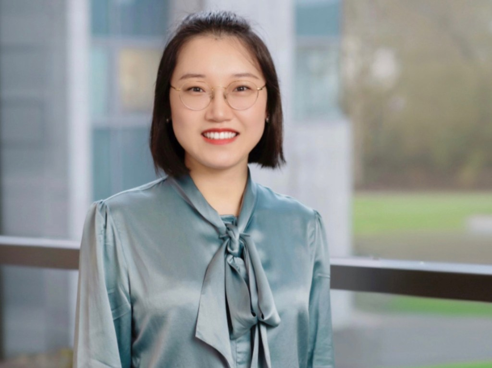

Information ecosystems
Algorithmic curation, misinformation, AI-generated knowledge
How do algorithms and AI change what information is seen, checked, and written?
Collective dynamics in human–machine systems
HC stands for Hybrid Collectives, the human–machine groups we study. Any resemblance to the initials of the lab’s founder, Hao Cui, is purely coincidental ;)
The Hybrid Collectives Lab (HC Lab) studies how collective attention, belief, and knowledge emerge and evolve when humans, algorithms, and AI interact, from social media platforms and online encyclopedias to workplaces and opinion networks. As algorithms and AI take on new roles in social life, we ask how these hybrid collectives form and change, and what they mean for the societies around them.
Algorithmic curation, misinformation, AI-generated knowledge
How do algorithms and AI change what information is seen, checked, and written?
AI managers, human–AI teamwork, workplace AI use
How does AI change the ways people work together, make decisions, and respond to authority?
AI agents, opinion formation, collective beliefs
How do AI agents reshape social influence and the formation of collective beliefs?

There are no open positions at the moment. Future openings for PhD students, postdocs, and research assistants will be posted here.
We welcome students and collaborators interested in human–machine collectives, information ecosystems, or computational social science to get in touch.